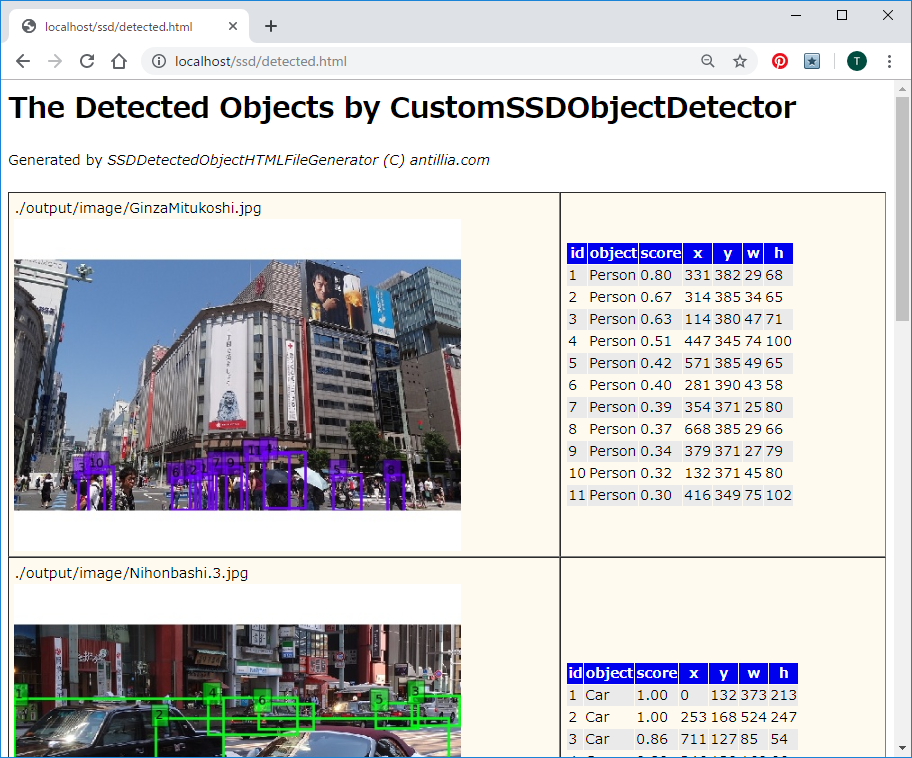

|
SOL4Py Sample: SSDDetectedObjectHTMLFileGenerator
|

#******************************************************************************
#
# Copyright (c) 2018-2019 Antillia.com TOSHIYUKI ARAI. ALL RIGHTS RESERVED.
#
# This program is free software: you can redistribute it and/or modify
# it under the terms of the GNU General Public License as published by
# the Free Software Foundation, either version 3 of the License, or
# (at your option) any later version.
#
# This program is distributed in the hope that it will be useful,
# but WITHOUT ANY WARRANTY; without even the implied warranty of
# MERCHANTABILITY or FITNESS FOR A PARTICULAR PURPOSE. See the
# GNU General Public License for more details.
#
# You should have received a copy of the GNU General Public License
# along with this program. If not, see <http://www.gnu.org/licenses/>.
#
#******************************************************************************
# SSDDetectedObjectHTMLFileGenerator.py
# 2019/06/20
import os
import sys
import configparser
import traceback
import glob
from SSDDetector import *
############################################################
#
#
class SSDDetectedObjectHTMLFileGenerator:
##
# Constructor
def __init__(self, argv):
self.detector = SSDDetector(argv)
app_name = os.path.basename(argv[0])
name, _ = app_name.split(".")
inifile = name + ".ini"
#print("inifile {}".format(inifile))
parser = configparser.ConfigParser()
parser.read(inifile)
#self.weightFile = parser.get("WEIGHT_FILE", "filename") # C:/ssd_keras/weights_SSD300.hdf5
self.inImageFolder = parser.get("INPUT", "foldername")
self.fileType = parser.get("INPUT", "filetype")
self.htmlTemplate = parser.get("TEMPLATE", "filename")
self.outRoot = parser.get("OUTPUT", "foldername") # C:/Apach24/htdocs/ssd/
self.outHtmlFilename = parser.get("OUTPUT", "htmlfilename") #
self.outSubFolder = os.path.join(self.outRoot, "output" + os.sep) # C:/Apach24/htdocs/ssd/output/
self.outImageFolder = os.path.join(self.outSubFolder, "image" + os.sep) # C:/Apach24/htdocs/ssd/output/image/
self.outCsvFolder = os.path.join(self.outSubFolder, "csv" + os.sep) # C:/Apach24/htdocs/ssd/output/csv/
self.outCsvFolder4Html = "./output/csv/" #Used in an html file.
self.outImageFolder4Html = "./output/image/" #Used in an html file.
if os.path.exists(self.outRoot) == False:
os.makedirs(self.outRoot)
if os.path.exists(self.outSubFolder) == False:
os.makedirs(self.outSubFolder)
if os.path.exists(self.outImageFolder) == False:
os.makedirs(self.outImageFolder)
if os.path.exists(self.outCsvFolder) == False:
os.makedirs(self.outCsvFolder)
self.fullOutHtmlFilename = os.path.join(self.outRoot, self.outHtmlFilename)
def run(self):
paired_filenames_list = []
self.detectAll(paired_filenames_list)
self.createHtmlFile(paired_filenames_list)
def detectAll(self, paired_filenames_list):
csv_ext = ".csv"
jpg_ext = ".jpg"
pattern = self.inImageFolder + os.sep + "*." + self.fileType #jpg
filenames = glob.glob(pattern)
print("pattern {}".format(pattern))
for imageFilepath in filenames:
print("filepath {}".format(imageFilepath))
filename = os.path.basename(imageFilepath)
fullOutImageFilepath = self.outImageFolder + os.sep + filename
fullOutCsvFilepath = self.outCsvFolder + os.sep + filename + csv_ext
self.detector.detect(imageFilepath, fullOutImageFilepath, fullOutCsvFilepath)
imageFilepath4Html = self.outImageFolder4Html + filename
csvFilepath4Html = self.outCsvFolder4Html + filename + csv_ext
print("Relative filepath {} {} in HtmlFile".format(imageFilepath4Html, csvFilepath4Html))
pair = (imageFilepath4Html, csvFilepath4Html)
paired_filenames_list.append(pair)
def createHtmlFile(self, paired_filenames_list):
row_template = "<tr>\n" \
"<td valign=\"top\">{}<br>\n" \
"<img src=\"{}\"></td>\n" \
"<td>\n" \
"<div style=\"height:500px width:300px overflow-y:scroll\">\n" \
"<div class=\"table_csv\" filename=\"{}\"></div>\n" \
"</div>\n" \
"</td>\n" \
"</tr>\n"
# Open htmlTemplateFile
with open(self.htmlTemplate) as ifs:
# Open outputHtmlFile
print("out {}".format(self.fullOutHtmlFilename))
with open(self.fullOutHtmlFilename, "w") as ofs:
while True:
line = ifs.readline()
if not line:
break
if line.find( "<!-- CODE_GENERATION -->") >= 0:
for pair in (paired_filenames_list):
(image_filename, csv_filename) = pair
print("{} {}".format(image_filename, csv_filename))
row = row_template.format(image_filename, image_filename, csv_filename)
print("1 {}\n".format(row))
ofs.write(row)
else:
ofs.write(line)
############################################################
#
if __name__=="__main__":
try:
np.set_printoptions(suppress=True)
config = tf.ConfigProto()
config.gpu_options.per_process_gpu_memory_fraction = 0.45
session = tf.Session(config= config)
set_session(session)
generator = SSDDetectedObjectHTMLFileGenerator(sys.argv)
generator.run()
except:
traceback.print_exc()
Last modified:21 Jun. 2019